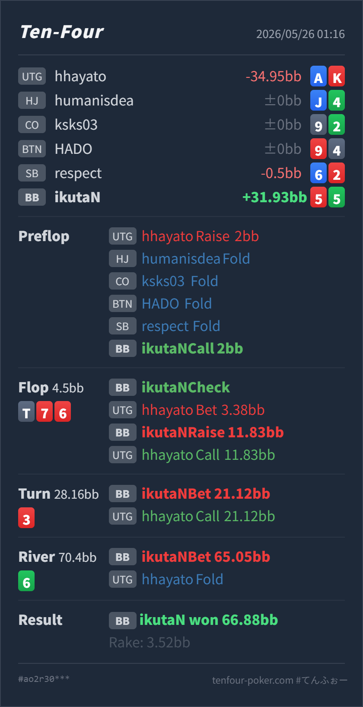

Preflop
良い55 はBB vs UTGのcall候補に入り、3betへ回す必要は薄い中小pairです。
GTO基準では、UTG 2BB openにBBで 5♥5♣ をcallするところは自然です。大きなズレはflop T♠ 7♥ 6♥ のcheck-raiseで、55 はここでOESDではなく、set outsと薄いバックドアに近いハンドです。turn以降の大きいbarrelはラインとしては一貫していますが、flopで選ぶブラフ候補が薄いため、全体としては攻めすぎ寄りです。
5♥ 5♣A♦ K♥T♠ 7♥ 6♥ 3♥ 6♣T♠ 7♥ 6♥ のUTG large c-betに対して 5♥5♣ をcheck-raiseから3街打ち切ってよいか。55 はその中ではかなり薄い候補です。T76 系でcheck-raise bluffを作るなら、pair + straight draw、強いheart draw、54s / 85s のようにturn以降も自然にbarrelできるハンドを優先します。6♥ 6♣ 5♥ 5♣ T♠ のtwo pairですが、value betできる強さではなく、65.05BB は実質bluffです。5♥ 5♣A♦ K♥2BB, HJ fold, CO fold, BTN fold, SB fold, BB Hero callT♠ 7♥ 6♥ 3♥ 6♣4.5BB, BB Hero check, UTG Villain bet 3.38BB, BB Hero raise 11.83BB, UTG Villain call28.16BB, BB Hero bet 21.12BB, UTG Villain call70.4BB, BB Hero bet 65.05BB, UTG Villain fold66.88BB, rake 3.52BB
良い55 はBB vs UTGのcall候補に入り、3betへ回す必要は薄い中小pairです。
T♠ 7♥ 6♥攻めすぎ5♥5♣ はunderpairで、1枚の4や8だけではstraightになりません。heartも1枚だけなので、強いdrawではありません。
3♥薄いbarrel
Heroは5のpairに、river 4 のgutshotと低いheart blockerが付いた形です。ただし made flush ではなく、相手の高いheartやoverpairに強くはありません。
6♣高分散
Heroはsixes and fivesのtwo pairですが、相手のcall rangeに対してvalueは足りません。betするなら明確にbluffです。
| 論点 | その場で置きがちな見立て | どこがズレやすいか | 次回の基準 |
|---|---|---|---|
| flopの55 | 5があるのでstraight drawに近く、強く押し返せそう | T76 で 55 は、1枚の4や8だけではstraightになりません。flop時点ではset outsと薄いバックドア寄りで、call / raiseに回すにはequityが不足しやすいです。 | 55 は基本fold寄り。check-raiseは、1枚で強く改善するdrawやpair + drawを優先 |
| check-raise range | BBに強いhandが多いboardなので何でも押せそう | board全体はBBに合いますが、ブラフ側まで広げすぎると、UTGのoverpair / Tx / heart系にcallされた後のbarrelが苦しくなります。 | valueが厚いboardほど、bluffは「callされた後も続けられるか」で絞る |
| riverのtwo pair表示 | 最後はtwo pairなので押し切れるかもしれない | board pairで表示上はtwo pairでも、相手のturn call rangeにはTx、overpair、flush、straight、set系が残ります。Heroのtwo pairはshowdown valueというより、相手の中強度を降ろすためのbluffです。 | 役名ではなく、相手のcall rangeに勝っているかでvalue / bluffを分ける |
| ストリート | その時点の見え方 | 実ハンドの位置づけ | 評価 | その場の一手 |
|---|---|---|---|---|
| Preflop | UTGが基準サイズの 2BB でopenし、BBでdefendする場面です。 | 55 はBB vs UTGのcall候補に入り、3betへ回す必要は薄い中小pairです。 | 良い | callで問題ありません。set valueと一部の低いboardでの実現を見ます。 |
Flop T♠ 7♥ 6♥ | UTGが75% potの大きめc-bet。board自体はBBのdefend rangeにもかなり当たり、BBはset / two pair / 98s / 強いdrawを持てます。 | 5♥5♣ はunderpairで、1枚の4や8だけではstraightになりません。heartも1枚だけなので、強いdrawではありません。 | 攻めすぎ | check-raiseに回すなら、54s、85s、pair + draw、two heartのdrawを優先したいです。55 はfold寄りでよいです。 |
Turn 3♥ | flop check-raiseにUTGがcallした後、3枚目のheartが落ちました。BB側のtwo heart bluffや 54s は大きく改善します。 | Heroは5のpairに、river 4 のgutshotと低いheart blockerが付いた形です。ただし made flush ではなく、相手の高いheartやoverpairに強くはありません。 | 薄いbarrel | flopでraiseした後の継続としてbetする一貫性はあります。ただし、このcomboを広く打つとbluff過多になりやすいので、頻度はかなり絞りたいです。 |
River 6♣ | boardがpairし、BBはfull houseやflushを表現できます。一方、UTGのturn call rangeにもoverpair、Tx、flush、straightが残ります。 | Heroはsixes and fivesのtwo pairですが、相手のcall rangeに対してvalueは足りません。betするなら明確にbluffです。 | 高分散 | 大きく打つなら、相手のoverpair / Tx / 7xを降ろす狙いです。実戦のようなA-highはcheckでも勝てるため、river bluffは相手が中強度を降りる前提で使います。 |
T76 で 55 を持った時、見た目よりdrawが弱いです。1枚の4や8でstraightになるわけではないので、flop check-raise候補としては下げます。55 のflop check-raise頻度をかなり下げ、より強いdrawやpair + drawに寄せる方が安定します。A♦K♥ で、flop large c-bet後にcheck-raiseをcallし、turnもA-high + K-high heartで続行してriver foldしています。このようにovercard + heart blockerで広く残り、riverで降りる相手には、BBの大きいbarrelは利益を持ちやすくなります。55 よりもequityとblockerが強いcomboをbluffに回します。